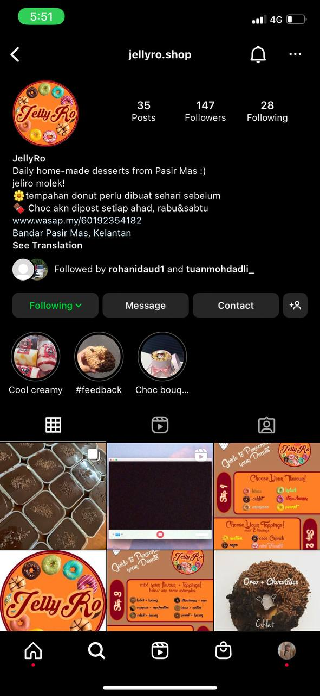
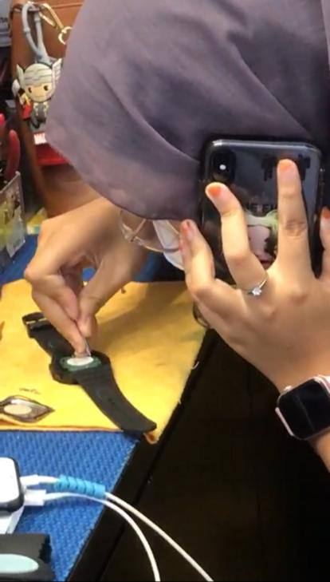
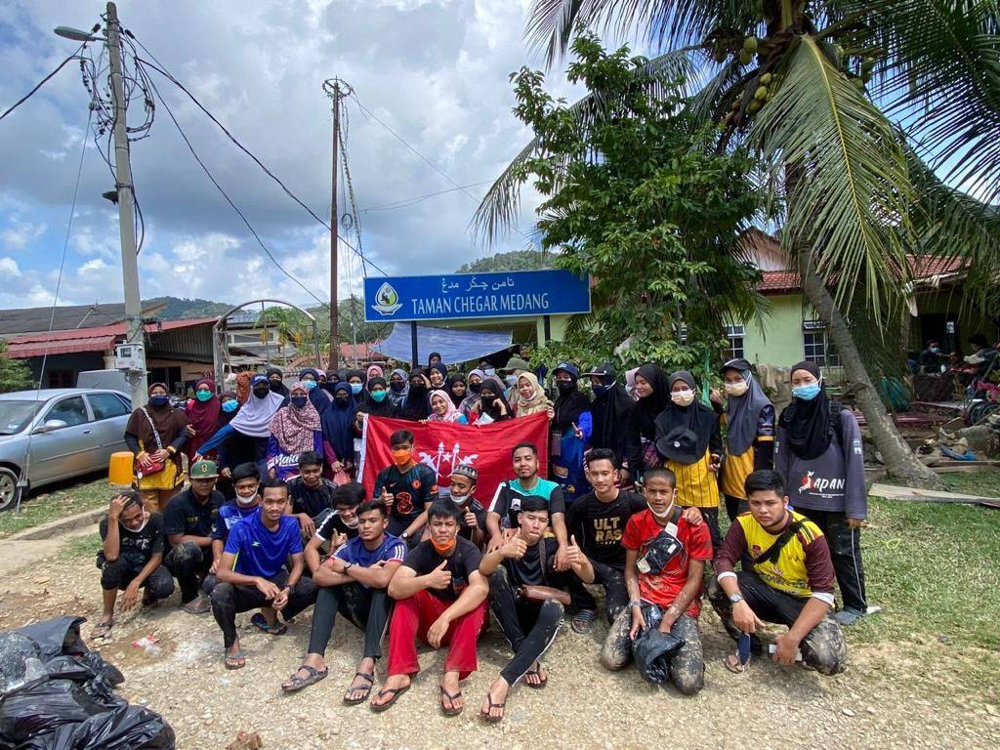

This is how I've lived as a NURUL SYAHIRA:

In 2019,
I was a high school student at the time and was having difficulty with the SPM final session. I started the "Jellyro.shop" company, which sells baked goods including donuts and cakes. Because of the enthusiastic response from clients, my mother and I enjoy running this venture.

In 2020,
I began to venture outside of my home to experience the outside world after finishing the SPM's exam. I began my work as a promoter in an Aeon Mall watch store in Kota Bharu. I was able to improve my client communication abilities to the point that I can now control those skills.

In 2021,
I kept working for the watch shop until I was constantly doing "part-time" jobs in my leisure time. Every holiday, I frequently participate in volunteer opportunities set up by the Kelantan youth club. I once assisted Pahang flood victims in cleaning up their flooded homes. Additionally, I participated in the Bandar Pasir Mas Health Clinic's MyVac campaign as a volunteer. I was able to meet folks who had different medical symptoms when I was working with MyVac, and I frequently encountered covid victims. Because the risk of contracting the disease is so great, I am in charge of the patient section performing Covid-19 screening, and it is quite unsettling for me to leave the facility.
However, I am really satisfied with my job because I get to work with pleasant and helpful teammates.
=======
This is how I've lived as a NURUL SYAHIRA:
In 2019,
I was a high school student at the time and was having difficulty with the SPM final session. I started the "Jellyro.shop" company, which sells baked goods including donuts and cakes. Because of the enthusiastic response from clients, my mother and I enjoy running this venture.
In 2020,
I began to venture outside of my home to experience the outside world after finishing the SPM's exam. I began my work as a promoter in an Aeon Mall watch store in Kota Bharu. I was able to improve my client communication abilities to the point that I can now control those skills.
In 2021,
I kept working for the watch shop until I was constantly doing "part-time" jobs in my leisure time. Every holiday, I frequently participate in volunteer opportunities set up by the Kelantan youth club. I once assisted Pahang flood victims in cleaning up their flooded homes. Additionally, I participated in the Bandar Pasir Mas Health Clinic's MyVac campaign as a volunteer. I was able to meet folks who had different medical symptoms when I was working with MyVac, and I frequently encountered covid victims. Because the risk of contracting the disease is so great, I am in charge of the patient section performing Covid-19 screening, and it is quite unsettling for me to leave the facility.
However, I am really satisfied with my job because I get to work with pleasant and helpful teammates.
>>>>>>> 2f4d2862c951696c17d242390873d696b836dd25